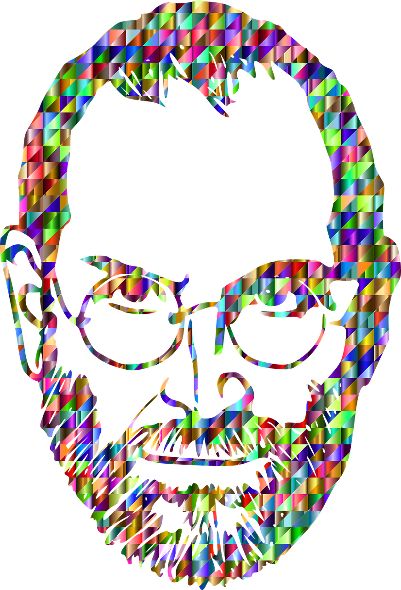

Steve Jobs
I want to put a ding in the universe

Steve's iconic pensive look
- 24 Feb 1955 Steven Paul was born in San Francisco, the son of Abdulfattah Jandali and Joanne Schieble. He is quickly adopted by Paul and Clara Jobs
- 1960 The Jobs family moves from San Francisco to Mountain View, a suburban town in Santa Clara county, more famous under the name Silicon ValleySummer
- 1968 13-year-old Steve Jobs calls up Bill Hewlett and gets a summer job at the HP factory
- 1969 Steve Jobs meets Steve Wozniak, 5 years older, through a mutual friend. Woz and Steve share a love of electronics, Bob Dylan, and pranks
- 1974 Steve gets his first job at video game maker Atari, and later makes a trip to India to 'seek enlightenment' with his college friend Dan KottkeMar
- 1976 Woz and Steve show the early Apple I board at the Homebrew Computer Club1 Apr
- 1976 Apple Computer Inc. is incorporated by Steve Jobs, Steve Wozniak and Ron WayneSpring
- 1976 Steve and Woz start assembling Apple I computers in the Jobses' garage, and sell them to computer hobbyists, including 50 for the Byte Shop
- 28 Aug 1976 Steve Jobs and Woz show off the Apple I at the Personal Computing Festival in Atlantic City, with help from Dan Kottke
- Jan 1977 Former Intel executive turned business angel Mike Markkula invests in Apple and hires former colleague Mike Scott as CEO.
- 1978 The Apple II becomes the first mass-market personal computer, with impressive sales around the US. Apple becomes a symbol of the personal computing revolution
- 1978 Steve's ex-girlfriend Chris-Ann Brennan gives birth to their daugher Lisa. Steve refuses to acknowledge he is the father
- 1978 At Apple, work starts on the Apple III and the Lisa, while Jef Raskin begins The Book of Macintosh
- Dec 1979 Steve Jobs is shown the first working graphical user interface at Xerox PARC
- 1979 Sales of Apple II skyrocket after pioneer spreadsheet software Visicalc is introduced
- 1980 Jef Raskin’s Macintosh project is green-lighted.
- May 1980 Apple launches the Apple III, which will prove a disastrous flop
- 12 Dec 1980 Apple goes public, increasing Steve Jobs' net worth from dozens of millions of dollars to over $200 million
- Jan 1983 Launch of the Lisa computer. The Lisa team later merges with the Mac team under Steve Jobs's leadership
- 8 Apr 1983 PepsiCo CEO John Sculley becomes Apple's CEO after having been wooed by Steve Jobs for several months
- >May 1985 Palace coup: Apple's board sides with John Sculley and strips Steve off all executive duties
- Summer 1985 Alan Kay first introduces the Pixar team to Steve Jobs
- 17 Sep 1985 Steve Jobs resigns from Apple and starts NeXT with five other refugees from Apple. Apple announces it will sue NeXT
- 30 Jan 1986 Jobs buys the computer division of George Lucas' ILM for $10 million and incorporates it as Pixar
- >1986 Steve's mother Clara dies. A couple months later, Steve discovers his biological mother Joanne and his sister, novelist Mona Simpson. They will become close friends
- Feb 1987 Ross Perot invests $20 million in NeXT, based on a $125 million valuation. The startup has still to release a productSep 1988
- 12 Oct 1988 Steve Jobs introduces the NeXT Cube in San Francisco to great critical acclaim, pitching it as a workstation for higher educationWinter
- Dec 1988 At SIGGRAPH, Pixar releases its new short Tin Toy. It will win 1988's Academy Award for Best Animated Short Film
- >Jun 1989 Canon invests $100 million in NeXT, now valued at $600 million
- 18 Mar 1991 Steve Jobs marries Laurene Powell in Yosemite under the blessing of Steve's old zen guru Kobin Chino. Laurene is already pregnant
- Fall 1991 Laurene gives birth to Steve’s first son, Reed Paul Jobs
- Late 1995 Laurene gives birth to Erin Siena Jobs, her second child with Steve
- Early 1996 Steve Jobs negotiaties a breakthrough deal between Pixar and Disney with its CEO Michael Eisner. The deal includes landmark rights for a studio, such as equal billing
- Jul 1997 Gil Amelio is ousted by the Apple Board of directors after a disastrous quarter. Steve Jobs is named interim CEO in his place and installs his NeXT executive team at the top of Apple
- 6 Aug 1997 Steve Jobs introduces Apple's new board of directors and a truce with Microsoft at Macworld Boston
- Fall 1997 Apple starts its 'Think Different' campaign to restore its damaged brand image. The new slogan will quickly enter popular culture and define the company for the next five years
- >6 May 1998 Steve Jobs introduces Apple's revolutionary iMac at the Flint Center auditorium in Cupertino, 14 years after he had introduced the Macintosh at that same place
- 24 Mar 2001After four years of hard work, Mac OS X 10.0, the new incarnation of NeXTSTEP, ships
- >23 Oct 2001 After an 8-month crash development program, Steve Jobs unveils iPod at a small media event on the company's campus. He has no idea how it will tranform Apple
- >28 Apr 2003 Apple opens the revolutionary online iTunes Music Store in the US, after negotiating landmark deals with all major music labels
- >Fall 2003 Steve Jobs is diagnosed with pancreatic cancer, but stubbornly refuses any modern medical treatment for months. He tries alternative diets instead
- >Aug 2004 Steve Jobs finally has his pancreatic tumor removed by surgery
- 6 Jun 2005 At WWDC 2005, Steve Jobs announces that Apple is going to switch away from Motorola's and IBM's PowerPC architectures, and use Intel processors in its future Macs instead.
- 24 Jan 2006 The Walt Disney Company acquires Pixar for $7.4 billion. Pixar's largest shareholder Steve Jobs joins the Disney board while Ed Catmull becomes president of the Walt Disney Animation Studios, and John Lasseter its chief creative officer
- >9 Jan 2007 In his most memorable keynote presentation ever, at Macworld 2007, Steve Jobs introduces iPhone and its revolutionary touch-screen interface. He also introduces Apple TV and announces the company's name change from Apple Computer Inc. to Apple Inc. to better reflect its new nature
- Apr 2007The SEC files charges against Apple’s Nancy Heinen and Fred Anderson for options backdating
- 29 Jun 2007 iPhone is released in the US, the same day as Pixar’s 8th feature film, Ratatouille
- >6 Mar 2008 Apple announces it will open the iPhone platform to outside developers with the App Store.
- 9 May 2008The press starts speculating about Steve Jobs's health as he appears very thin to unveil the iPhone 3G with an entry price of $199 on stage at WWDC
- >Apr 2009 Steve receives a liver transplant at the Methodist University Hospital in Memphis, Tennessee. He was weeks away from dying when he got the surgery
- >27 Jan 2010 After months of wild rumors, Steve Jobs unveils iPad, 'the biggest thing Apple's ever done'. The tablet runs the same operating system as iPhone
- >2 Mar 2011 Despite his medical leave, Steve Jobs takes the stage to unveil the new iPad 26 Jun 2011 At his last keynote at WWDC 2011, a freil Steve Jobs unveils Apple's cloud offering, iCloud, the foundation for the next decade of Apple products
- >24 Aug 2011 Steve Jobs resigns as CEO of Apple, with the words 'I have always said if there ever came a day when I could no longer meet my duties and expectations as Apple's CEO, I would be the first to let you know. Unfortunately, that day has come.' Tim Cook becomes Apple CEO
- 5 Oct 2011 Steve Jobs dies at home, surrounded by his family
Learn more about Steve here.